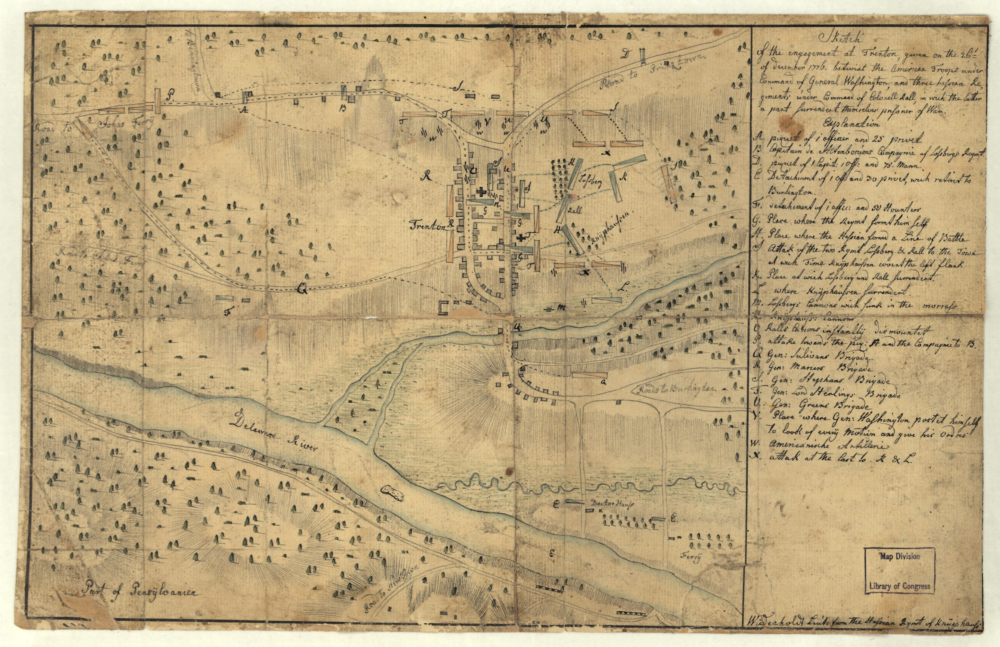

Trenton, 26 December 1776
Washington's march from the Delaware and the fight for the town
3:00 a.m.
26 December 1776

Current map
Today
1776 sketch
1776
Follow
Names
+
−
Scroll or pinch to zoom · drag to pan · scroll over the timeline to move time